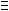

Fibonacci primitive roots
Problem 437
Published on Saturday, 21st September 2013, 10:00 pm; Solved by 252
When we calculate 8n modulo 11 for n=0 to 9 we get: 1, 8, 9, 6, 4, 10, 3, 2, 5, 7.
As we see all possible values from 1 to 10 occur. So 8 is a primitive root of 11.
But there is more:
If we take a closer look we see:
1+8=9
8+9=176 mod 11
9+6=154 mod 11
6+4=10
4+10=143 mod 11
10+3=132 mod 11
3+2=5
2+5=7
5+7=121 mod 11.
8 is called a Fibonacci primitive root of 11.
Not every prime has a Fibonacci primitive root.
There are 323 primes less than 10000 with one or more Fibonacci primitive roots and the sum of these primes is 1480491.
Find the sum of the primes less than 100,000,000 with at least one Fibonacci primitive root.